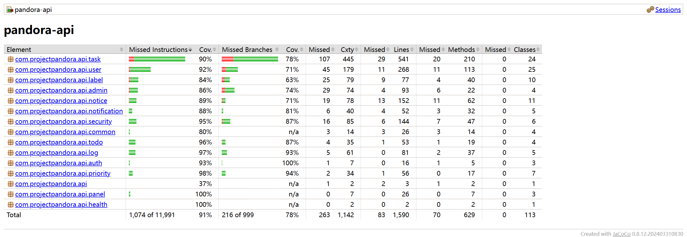

潘多拉项目中期测试报告
软件开发与测试综合实训 · 2026年11月20日
本报告依据《中期验收要求.pdf》，对修复后的潘多拉项目开展后端核心业务测试。最终全量288条自动测试全部通过；其中本轮新增120条验收用例，对应40个核心业务写入方法，每个方法均有正常、边界或状态边界、异常三类用例。行覆盖率94.78%，分支覆盖率78.38%。
本版为自动测试和文档整理完成版。人工实测只记录已明确反馈的场景；课程要求的学生逐条用例复核尚待签认。报告不作项目完全无缺陷或全部部署环境均验证通过的结论。
一 验收依据与交付对应
| 文件要求 |
本轮对应材料 |
| 关注后端核心业务，每个核心方法至少3条用例 |
附件01，40个方法、120条独立用例 |
| 覆盖正常、边界、异常输入 |
N、B、X编号及设计说明；B含状态边界 |
| 等价类划分与边界值分析 |
本报告第二部分及附件01 |
| 测试过程、用例设计、测试结论 |
本报告及附件02、05 |
| AI用例需人工逐条修改或复核，附提示词 |
附件04真实输入与生成约束；CSV待学生签认 |
| 建议附框架覆盖率输出截图 |
第四部分截图及证据/jacoco完整报告 |
| 验收前放入小组共享文件夹 |
文件已在仓库整理；上传共享文件夹需由小组完成 |
JUnit与pytest属于建议框架，不要求同时使用；本项目使用JUnit。要求没有规定覆盖率最低比例、页数或Word格式。现场验收每组20至30分钟，第10周内开展。
二 版本与测试环境
| 项目 |
实际环境 |
| 生产源码基线 |
main c0982b07be8a；完整提交号见执行元数据 |
| 本轮新增内容 |
验收测试、用例目录、执行脚本与文档；未修改业务逻辑 |
| 平台与Java |
Windows；Oracle JDK21.0.6；按Java17目标编译 |
| 后端 |
Spring Boot3.3.4、Maven3.9.10、JUnit Jupiter5.10.3、MockMvc |
| 数据库 |
H2 2.2.224内存库，启用Flyway，测试配置test |
| 覆盖率 |
JaCoCo0.8.12，统计本轮全量测试 |
| Web |
Node24.14.0、Vue3.5.22、Vite6.1.0 |
| Android对应源码 |
0.10.12，code75；用户实测设备及安装版本未提供 |
三 测试范围与用例设计
选取40个需要业务校验、权限控制或状态变化的后端写入方法作为本次核心清单。查询权限、组织访问、历史迁移和并发行为由既有测试继续覆盖。实体getter、响应映射、框架生成方法等没有作为独立核心业务函数凑数；核心入口的私有校验逻辑通过入口测试间接执行。
| 业务模块 |
核心方法与用例范围 |
| 登录 |
A01：登录及停用、错误密码 |
| 任务与审批 |
A02至A15：创建、批量、改期、初审、进度、内容变更、撤回、批准、驳回、删除、关键词、通用审核、私密备注 |
| 日志 |
A16至A18：创建、修改、提交 |
| 私人事项 |
A19至A21：创建、更新合并、删除 |
| 公司事项与个人清单 |
A22至A25：发布、修改、私密备注、清单整体保存 |
| 标签 |
A26至A29：创建、修改、停用、内容标签独立保存 |
| 资料与账号 |
A30至A36：个人资料、两套密码和头像接口、管理员创建与修改账号 |
| 查看申请与通知 |
A37至A40：申请、审批、单条与全部已读 |
等价类划分
按有效与无效长度、允许与不允许日期、正确与错误身份、合法与非法状态分别划分输入。成功操作断言内容或数据库状态；拒绝操作断言400、403、404或409等预期结果。拒绝无效输入属于用例通过，不能算业务失败。
边界值与状态边界
| 规则 |
本轮独立用例中的取值 |
预期 |
| 任务时间区间 |
开始早于、等于、晚于截止 |
前两者允许，倒置拒绝 |
| 进度百分比 |
50、100、101 |
正常值与上限允许，越上限拒绝 |
| 日志可创建日期 |
今天、前天、三天前 |
今天与前天允许，三天前拒绝 |
| 日志编辑时限 |
24小时内、24小时1秒后 |
允许与拒绝；更细时间场景见既有LogWriteWindowTests |
| 私人事项标题 |
普通文本、200字、201字 |
上限允许，越界拒绝 |
| 启用公司事项 |
0条后创建、9条后创建、10条后创建 |
第10条允许，第11条拒绝 |
| 标签数量 |
1、12、13 |
1至12允许，13拒绝 |
| 业务状态转换 |
待审到批准、批准后重复、他人自审 |
正常转换、重复拒绝、越权拒绝 |
完整输入和120条执行记录见附件01。状态边界不等同于数值边界，两种设计均在表中明确标识。批量100人上限、所有时间精确临界点及全部字段组合没有穷举，不以3条用例代表分支全覆盖。
四 测试执行与结果
先同步main并核对修复代码，再整理用例与预期，执行新增用例，修正测试自身的前置数据和事务刷新问题，最后清理历史target并对全部后端测试重新执行。最终结果完成于2026年11月20日12时10分45秒，北京时间；报告仅采用这一轮输出。
| 验证项目 |
执行结果 |
证据 |
| 后端全量测试 |
288条，失败0、错误0、跳过0 |
30份本轮JUnit XML及执行日志 |
| 其中新增核心验收用例 |
120条，40个核心方法均3/3通过 |
MIDTERM_CASE编号与附件01对应 |
| 原有后端测试 |
168条通过，含权限、迁移、并发等 |
附件05逐类统计 |
| Web状态测试 |
18条通过 |
Web测试.txt |
| Web生产构建 |
成功 |
Web构建.txt |
全体生产代码覆盖率
| 指标 |
已覆盖／总数 |
比例 |
| 行 |
1507／1590 |
94.78% |
| 分支 |
783／999 |
78.38% |
| 方法 |
559／629 |
88.87% |
统计对象包含后端生产实体、控制器、服务、记录类型与启动配置，没有排除低覆盖类。方法计数629包含辅助方法及生成代码，并不表示项目有629个核心业务功能。报告按XML精确计数保留两位小数；JaCoCo HTML界面可能显示整数百分比。
| 核心类 |
行覆盖 |
分支覆盖 |
| TaskService |
94.57% |
76.92% |
| WorkLogController |
100.00% |
93.18% |
| PersonalTodoController |
98.00% |
87.50% |
| CompanyNoticeService |
91.67% |
71.88% |
| PersonalPriorityService |
97.78% |
94.12% |
| ContentLabelsController |
77.42% |
52.63% |
| AdminUserController |
95.29% |
74.04% |
目前分支未覆盖216个。覆盖率只能说明测试执行经过的代码，不能代替需求覆盖、真机体验或真实数据库的并发验证。完整HTML可离线打开。
五 覆盖率输出截图
下图直接截取本轮JaCoCo HTML报告首页，未重绘数值。截图为建议附加证据，原始HTML、XML、CSV和执行数据文件随包保存。

六 缺陷修复与人工回归
队友已提交原13项问题的修复。本轮对日志旧版本冲突、事项不同字段合并与同字段冲突、重复创建幂等、旧任务补开始时间、逾期文字修改、日期清空、公司事项并发上限、多标签权限和旧电话兼容等进行了自动回归。具体测试名和证据层级见附件02，不将源码已改动直接等同于端到端验收通过。
用户已反馈查看另一篇日志不覆盖草稿；切换任务编辑有放弃选项；创始人可以修改无待审申请的逾期任务。此前“不能修改”的反馈已由用户更正，不作为遗留缺陷。任务草稿取消后恢复、双端界面冲突、拖动中断、通知A返回后打开B等剩余人工操作，仍按附件03记录实际结果。
本轮尝试在专用目录启动本机独立MySQL实例，但安装缺少组件，未成功启动；未连接既有业务数据库，也没有据此声称迁移存在新故障。MySQL首次安装与Docker整套启动仍需服务器负责人验证。历史验收文档中的旧运行结果仅作参考，没有计入本轮测试数量。
七 测试结论与提交条件
在本报告记录的代码版本、H2测试环境和输入范围内，后端288条自动测试全部通过，40个核心业务写入方法均具备至少三条独立验收用例，并使用等价类划分与边界值分析。Web18条测试及构建通过。本轮没有在最终全量执行中发现自动测试失败。
这些结果支持中期验收中的后端测试展示，不代表所有环境、设备和需求组合均无缺陷。人工反馈未涉及的操作、MySQL和Docker运行环境、Android重新构建，均不计为本轮已通过。用户设备与线上部署版本尚未核对，不能把线上手工反馈自动归为本地同一提交的实测。
提交前仍需小组完成
- 按附件01 CSV逐条人工复核AI生成用例，填写真实复核人、日期与意见；如修改用例，重新执行并更新报告。
- 补充附件03中的实际设备版本、执行人和人工结果；未执行项保留明确状态。
- 将报告和附件放到小组共享文件夹。当前只完成仓库内文件整理，不声称已上传共享文件夹。
现场验收建议安排
20至30分钟可安排为：3分钟介绍业务与测试范围，6分钟展示等价类和边界值设计，5分钟运行或讲解JUnit结果及覆盖率，5至8分钟演示修复回归与权限差异，最后留答疑时间。此安排是准备建议，不是PDF另行规定的交付物。
八 文件与复现
- 附件01：核心方法对应表、120条用例及CSV人工签认字段。
- 附件02：13项缺陷修复与回归记录。
- 附件03：人工验证记录。
- 附件04：真实AI提示词、生成约束、修正过程及人工复核状态。
- 附件05：30个测试类逐项统计与覆盖率说明。
- 证据：JUnit XML、JaCoCo完整HTML/XML/CSV、执行数据、截图及本轮日志。
- 测试源码：本轮新增Java测试、JSON用例目录及重跑脚本快照。
在仓库使用scripts/Run-MidtermTests.ps1并提供Maven与Java路径可重新生成证据。重跑会清理后端target测试产物，使用H2测试配置，不连接真实服务器。新一轮证据生成后，需重新同步书面结果，不能沿用旧报告数值。
验收依据为用户提供的一页《中期验收要求.pdf》。原始需求、项目规则和缺陷清单分别参见仓库docs中的产品设计、团队分工及2026年11月19日全项目问题检查文档。报告结论以本轮真实执行与用户最终确认的信息为准。